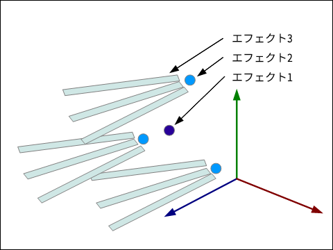

ツール・リファレンス¶
概要¶
ツール¶
このツールは、エフェクトの編集結果を表示するビュワー部分と、パラメーターを編集するための複数のウインドウで構成されています。 各ウインドウのパラメーターを編集することで、エフェクトを生成したり、見た目を変更したりできます。 各ウインドウは、ドラッグアンドドロップにより、配置を変更したりタブに変更したりすることができます。 「メニューバー->ウインドウ」を選択することで、ウインドウを選択したり、初期配置では配置されていないウインドウを表示したりできます。 また、全てのウインドウを初期配置に戻すことができます。
エフェクト¶
このツールでは、ノードを編集することでエフェクトを生成します。ノード同士は親子関係を持っており、子は親の影響を受けます。 親子関係を利用することで複雑なエフェクトを生成できます。
例を用いて親子関係について説明します。この例ではノード1の子にノード2が存在し、ノード2の子にノード3が存在します。 まず、ノード1からエフェクト1が発生します。数フレーム後、ノード1から発生したエフェクトから数個のエフェクト2がエフェクト1から相対的な位置に発生します。更に数フレーム後、ノード2から発生したエフェクトからエフェクト3が発生します。これは下図に示されています。このようにして、ノードにエフェクトの振る舞いと親子関係を記述することにより、様々なエフェクトを表現することができます。 なお、このツールでは、「ノード」のパラメーターを元に生成されたエフェクトの1つあたりを「パーティクル」と呼びます。
操作方法¶
プレビュー画面¶
| 回転 | マウスの右ボタンを押しながら、マウスを移動 |
| 平行移動 | マウスホイール、もしくは右ボタン+Shiftを押しながら、マウスを移動 |
| 拡大 | マウスホイールを回転、もしくは右ボタン+Control |


ノードツリー¶
ノードツリーでは、エフェクトを構成するノードを編集できます。 右クリックで、ノードを追加したり、ノードを削除できます。
ドラッグ & ドロップでノードの順序を入れ替えれます。
目のアイコンをクリックすると、ノードの表示や非表示を切り替えれます。 Shiftと同時にクリックすることで、子ノードも含めて表示を切り替えれます。

パネル(ウインドウ)¶
エフェクトに作成するパラメーターを編集するためのパネル(ウインドウ)はほとんど表示されていません。 メニューバーから「ウインドウ」を選択すると表示可能なウインドウの一覧が表示されます。 選択するとウインドウが表示されます。
表示したウインドウは、ウインドウのメニューバーを左クリックしつつ、移動することで、ウインドウを移動できます。
移動中に表示される四角に重ねることで、ウインドウを他のパネルに追加することもできます。

タブの間にドラッグ ＆ ドロップすることで、タブに加えることもできます。 (タブのパネルが1つの場合、タブの上にドラッグ ＆ ドロップします。)

ファイル形式¶
エフェクトファイル (efkefc)¶
エフェクトはefkefcという拡張子のファイルに保存されます。 このファイルは、ツールで編集することも、ゲーム中で再生することもできます。
バージョン1.4まではツール編集用にefkproj、ゲーム再生用にefkと役割が別れていました。 互換性維持のため、現在のバージョンはefkprojとefkを読み込むことができます。
リソースファイル¶
エフェクトから参照されるリソースファイルです。一般的なファイル形式のものと、Effekseer独自のファイル形式のものがあります。
| 拡張子 | 説明 |
|---|---|
| png | テクスチャ画像ファイル |
| wav | サウンド波形ファイル |
| efkmat | マテリアルファイル(マテリアルエディタで作成) |
| efkmodel | モデルファイル(fbx,mqoから変換) |
| efkcurve | カーブファイル(fbxから変換) |
エフェクトパラメータ¶
コマンドライン¶
コマンドラインからEffekseerを起動するときに、引数を追加することでEffekseerの挙動を変更できます。 例えば、「.efkproj」のファイルを「.efk」にEffekseerのGUIを起動せずに変換できます。 これとスクリプトを組み合わせることで、任意のフォルダのエフェクトのファイルを一括で変換できます。
-cui |
CUIモードで起動 |
-in * |
*を開いて起動 |
-o * |
*に名前をつけて保存 |
-e * |
*に標準形式で出力 |
-m * |
標準形式で出力するときのエフェクトの拡大率を*に設定 |
--materialcache |
指定されたエフェクトに含まれているマテリアルのキャッシュを全て生成 |